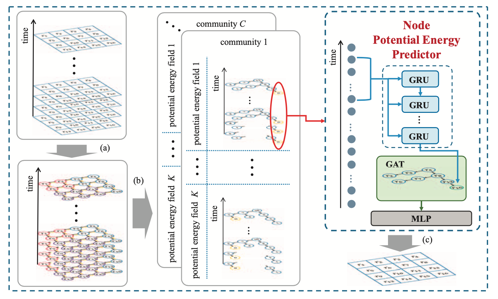

城市体征构建与认知系统
模型介绍
人口表征建模是指对人口进行建模和描述的过程，以便更好地了解和预测人口的特征和行为。人口表征建模在许多领域都非常重要，例如公共政策、市场营销、医疗保健和社会科学等领域。人口表征建模主要包括人口统计学方法、人口地理学方法和社会网络分析方法。本系统重点基于雄安新区人口统计特点和地理位置信息进行建模，以了解人口的地理特征和流动趋势，有助于优化城市资源配置，规划城市发展方向，加强城市风险管理等。
本系统采用了一种全新的可解释的时空深度学习模型来建模城市人口表征。其主要思想是类比由重力势能场驱动的水流，通过建立一些潜在的时空势能场来模拟城市人口分布和流动趋势。为了实现这一效果，本系统利用一种风场分解算法，将人口迁移活动分解为多个树状分量，从而建立可解释的时空势能场。并设计一个由时间组件(建模时间相关性)和空间组件(建模空间依赖性)组成的时空深度学习模型进行建模。
模型框架图
